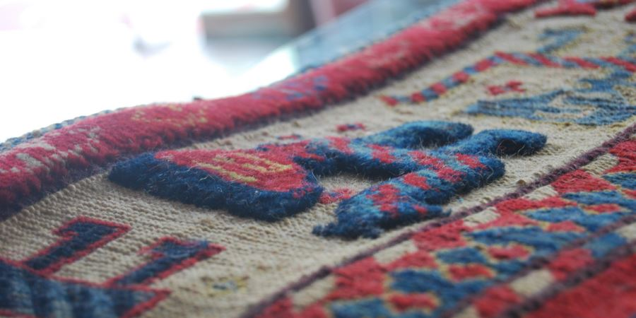
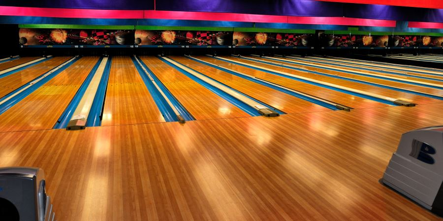
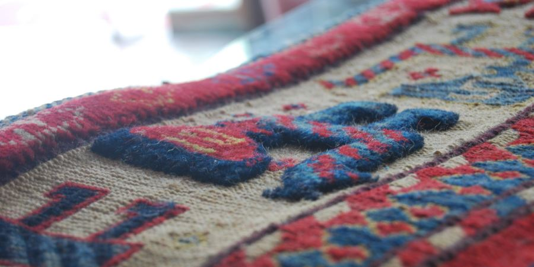
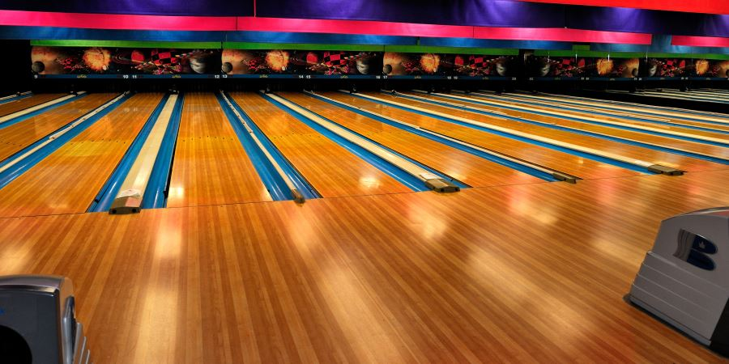
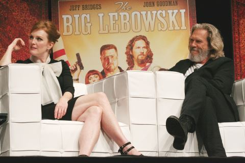

The Big Lebowski Fan Page
Lebowski ipsum when will you find these guys? I mean, do you have any promising leads? Yeah, well, right man, there are many facets to this, uh, you know, many interested parties. If I can find your money, man— what's in it for the Dude? This compulsive fornicator is taking my father for the proverbial ride. Every time a rug is micturated upon in this fair city, I have to compensate.
You know, little of this, little of that. Do you have any kalhua? I know how he likes to present himself; Father's weakness is vanity. Hence the plot. Please see him, Jeffrey. He's a good man. And thorough. They call Los Angeles the City of Angels. I didn't find it to be that exactly, but I'll allow as there are some nice folks there. 'Course, I can't say I seen London, and I never been to France, and I ain't never seen no queen in her damn undies as the fella says. But I'll tell you what, after seeing Los Angeles and thisahere story I'm about to unfold —wal, I guess I seen somethin' ever' bit as stupefyin' as ya'd see in any a those other places, and in English too, so I can die with a smile on my face without feelin' like the good Lord cheated me.
One a those days, huh. Wal, a wiser fella than m'self once said, sometimes you eat the bar and sometimes the bar, wal, he eats you. That wasn't her toe. Hello. Nein dizbatcher says zere iss problem mit deine kable. Dude, please!… Is this your homework, Larry? Yeah. Roadie for Metallica. Speed of Sound Tour. You want a toe? I can get you a toe, believe me. There are ways, Dude. You don't wanna know about it, believe me.

Shomer shabbos. Ja, vee could really do it, Lebowski. We want that money, Lebowski. I spent most of my time occupying various, um, administration buildings, smoking thai-stick, breaking into the ROTC and bowling. These men are nihilists, Donny, nothing to be afraid of. Uh, yeah. Probably a vagrant, slept in the car. Or perhaps just used it as a toilet, and moved on. Stay out of Malibu, deadbeat!
They were Nazis, Dude? I'll get you a toe by this afternoon —with nail polish. Chinaman is not the preferred nomenclature. Asian-American. Please. Near the In-and-Out Burger. Ja, your viggly piece, Lebowski. Yeah man. Well, you know, the Dude abides. Okay. Vee take ze money you haf on you und vee call it eefen. Call the medics, Dude. Your "revolution" is over, Mr. Lebowski! Condolences! The bums lost!
They're nihilists. Mr. Lebowski is in seclusion in the West Wing. Eight-year-olds, Dude. But that is up to little Larry here. Isn't it, Larry? I hope you're not avoiding this call because of the rug, which, I assure you, is not a problem. Who's in pyjamas, Walter? Za, okay, I bring mein toolz. The Knutsens. It's a wandering daughter job. Bunny Lebowski, man. Her real name is Fawn Knutsen. Her parents want her back.